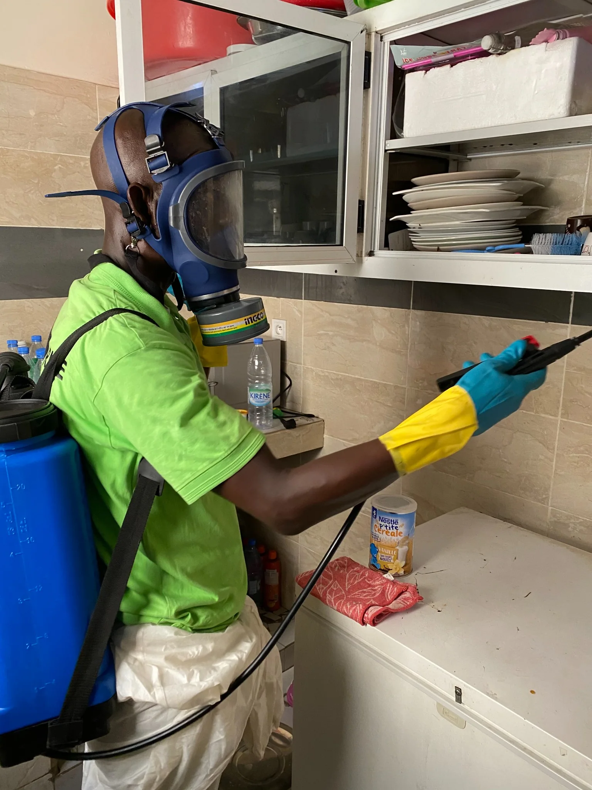
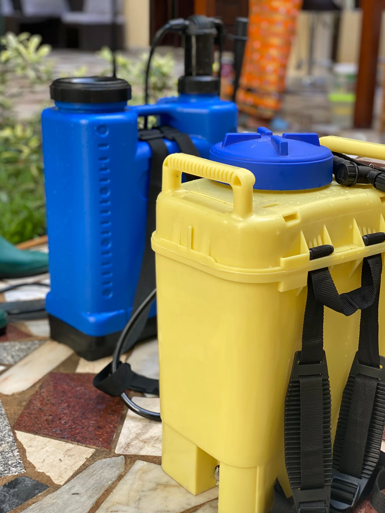
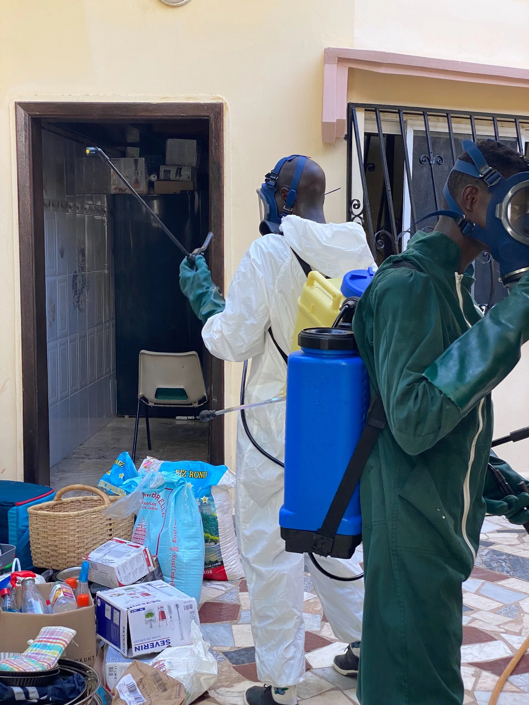
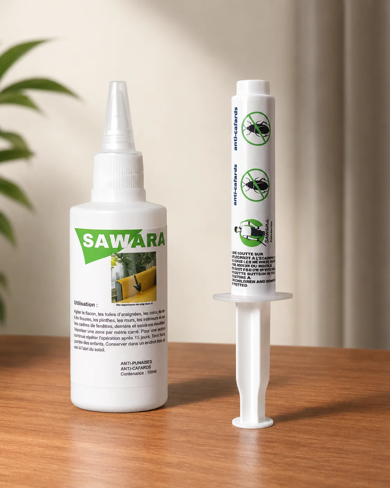
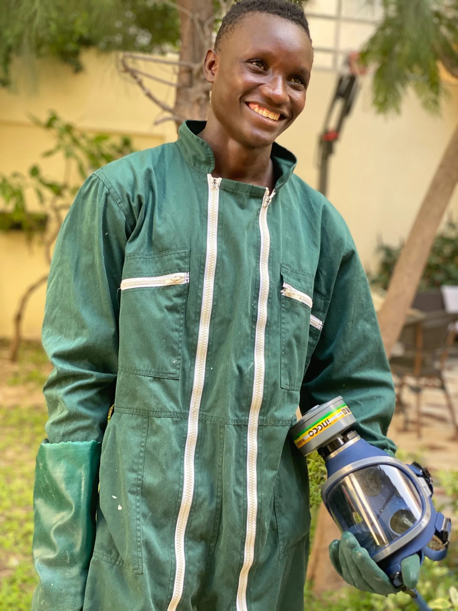
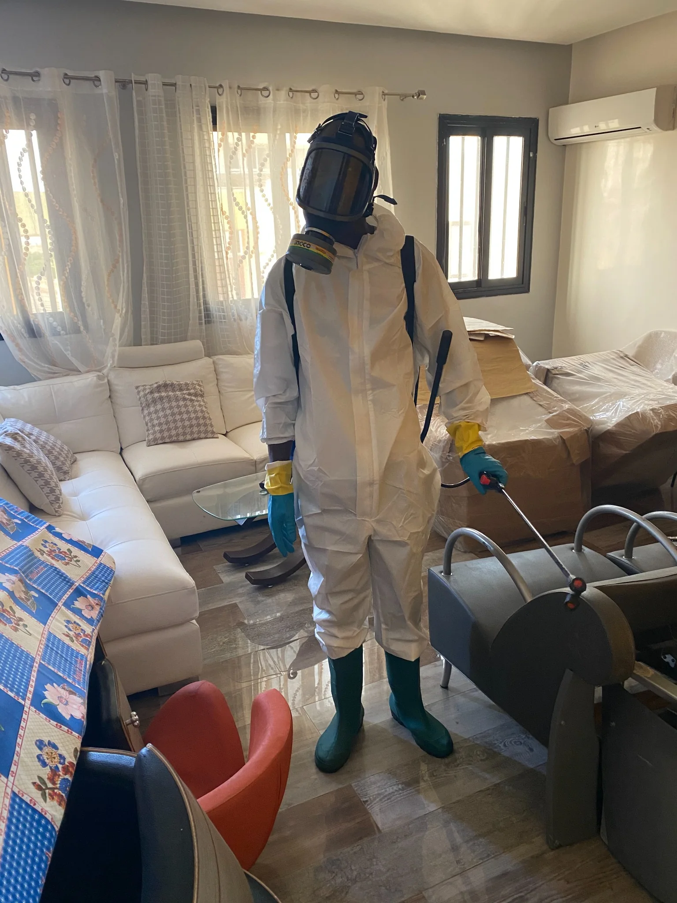

SawaraEntreprise
77 552 64 19
Devis WhatsApp
WhatsApp
Sawara Entreprise intervient principalement à Dakar et dans d'autres zones du Sénégal pour identifier, traiter et limiter le retour des cafards, fourmis, moustiques, punaises de lit et termites. Une approche basée sur le diagnostic et le traitement adapté à chaque situation.

Le Sénégal présente des conditions particulièrement favorables au développement des insectes nuisibles : chaleur persistante, humidité saisonnière, habitats denses. À Dakar comme à Thiès, Mbour ou Saint-Louis, les infestations touchent aussi bien les particuliers que les restaurants, les bureaux, les hôtels et les institutions.
L'hivernage crée des conditions idéales pour les moustiques, les fourmis et les termites. La chaleur sèche du reste de l'année favorise les cafards, qui trouvent refuge dans les cuisines, les canalisations et les faux plafonds.
Les bombes aérosol et produits vendus en grande surface agissent souvent en surface. Un technicien formé identifie l'espèce, localise les foyers d'infestation et choisit la technique appropriée au type de lieu et au niveau d'infestation constaté.

Sawara intervient sur l'ensemble des nuisibles courants au Sénégal, avec une approche adaptée à chaque espèce.
Parmi les nuisibles les plus résistants et les plus répandus à Dakar. Leur présence représente un risque de contamination des surfaces et des aliments. Traitement par gel appât ou pulvérisation ciblée, selon la configuration du lieu.
Fourmis rouges, charpentières, de maison. Certaines s'attaquent aux stocks alimentaires, d'autres aux structures en bois. Localisation des colonies et traitement ciblé sur les zones d'activité.
Risque sanitaire sérieux en hivernage : paludisme, dengue, chikungunya. Interventions de pulvérisation adaptées aux espaces extérieurs et intérieurs, accompagnées de conseils sur les gîtes larvaires.
S'installent dans les matelas, cadres de lit et meubles rembourrés. Souvent découvertes après plusieurs semaines. Diagnostic approfondi, traitement adapté et recommandations pour limiter la propagation.
Travaillent en silence et peuvent fragiliser les structures en bois pendant des mois. Diagnostic des zones à risque, barrière chimique au sol ou injection directe dans les bois touchés selon l'état constaté.
Guêpes et frelons, mouches, lépismes, puces, mille-pattes et autres insectes rampants ou volants. Traitement adapté à chaque espèce et chaque configuration de lieu.
Un technicien identifie l'espèce, évalue le niveau d'infestation, localise les foyers et repère les facteurs favorisant la présence des nuisibles. Base d'une solution adaptée à votre situation réelle.
Sélectionné selon l'espèce identifiée, le type de lieu, la présence de personnes vulnérables et le niveau d'infestation constaté. Produits appliqués selon les règles d'utilisation en vigueur.
Recommandations concrètes : gestion des déchets, points d'entrée à colmater, habitudes à adapter pour limiter le risque de retour. La prévention fait partie intégrante de l'intervention.
Pour les situations complexes ou les infestations récurrentes, un suivi selon un calendrier défini permet de vérifier l'efficacité du traitement dans le temps et d'ajuster si nécessaire.


En plus des interventions sur place, Sawara propose à la vente des produits anti-nuisibles adaptés au contexte sénégalais — en prévention ou en complément d'un traitement professionnel, selon les conseils de nos techniciens.

Sawara s’est spécialisée dans l’hygiène professionnelle et la gestion des nuisibles, avec une approche terrain adaptée aux réalités du Sénégal.
Plus de 100 avis vérifiés sur Google, avec une note moyenne de 4,9/5. Nos clients citent régulièrement la ponctualité, le sérieux des techniciens et la précision du diagnostic
Sawara intervient principalement dans le Grand Dakar. Des déplacements sont possibles selon la nature et l'urgence de la demande.
